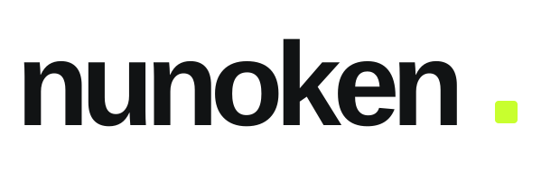
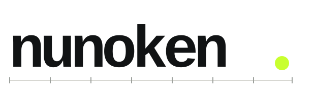
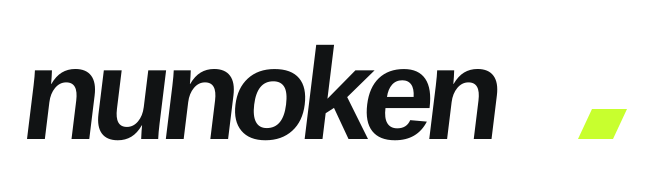

OPTION A / RECOMMENDED
Precision
現行表記を最も自然に洗練。太さと文字間を整え、製品が増えても使いやすい中立性を重視しています。
TRUSTSOFTWARESCALABLE
現在のワードマークを起点に、信頼性、データ分析、スポーツの推進力という3つの方向を比較するための初稿です。

現行表記を最も自然に洗練。太さと文字間を整え、製品が増えても使いやすい中立性を重視しています。

等幅のリズムと基準線で、記録・数値・分析を表現。テクニカルで静かな個性を持たせた案です。

わずかな前傾と切り込むピリオドで、試合の流れと前進する感覚を表現。競技性が最も強い案です。
初稿のSVGは比較用のためシステムフォントを参照しています。採用案決定後に、字形の調整、アウトライン化、白黒・反転版、最小使用サイズ、余白規定を含む正式データへ仕上げます。